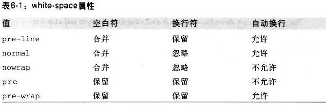

white-space:normal,nowrap,pre,pre-wrap,pre-line,inherit.
white-space的默认值normal会丢掉多余的空格，并且换行符也会转换为空格
This paragraph has many space in it.
white-space的值为pre时，相当于<pre>标签，浏览器会注意多余的空格和换行符。
This paragraph has many space in it.
white-space的值为nowarp时，除非使用br元素来换行，相当于<td nowrap>.
white-space的值为pre-wrap时，会保留空白符.
This paragraph has many space in it.
white-space的值为pre-line时，与pre-wrap相反，会像正常文本一样合并空白符。
This paragraph has many space in it.
